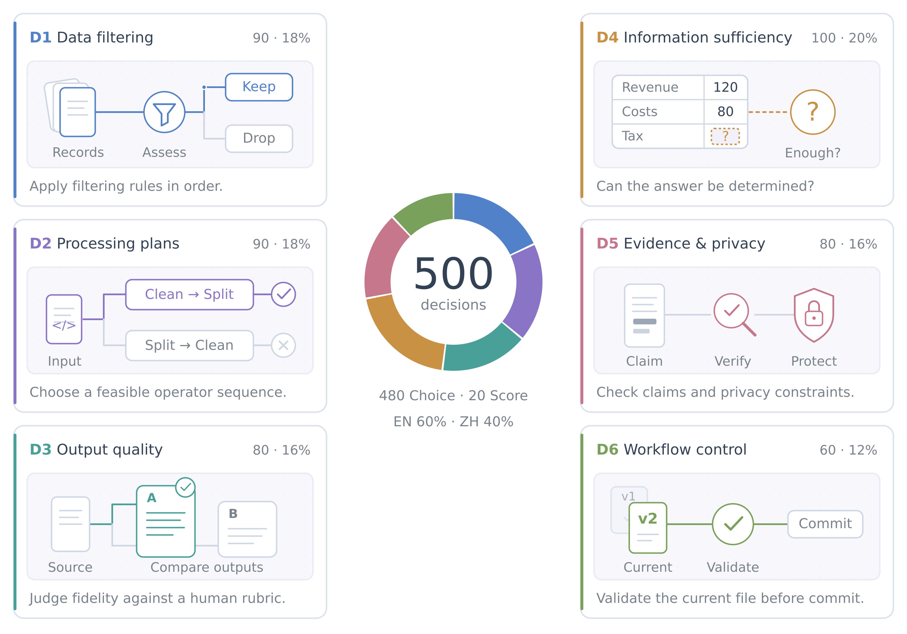

Shared task inputs
Each task supplies the complete workflow state, question and ordered answer labels. Expected answers stay with the evaluator.
Data decision evaluation
DataJevBench evaluates how models filter records, select processing steps, judge quality, assess evidence and choose the next action.
Each choice shapes the data and conclusions that follow. The benchmark presents these decision points with a workflow state, an instruction and candidate answers, so models can be compared using shared inputs and scoring.
Six categories cover data admission, processing plans, output quality, information sufficiency, evidence and privacy, and workflow control. The task set contains 480 choice questions and 20 ordinal score questions, with 60% English and 40% Chinese instructions.

Compare overall decision accuracy and the six capabilities. Select a model to explore its scores and inference configuration.
Loading results…
Scroll horizontally for more metrics.
Accuracy uses all 500 tasks; ranks follow overall Accuracy with ties. Valid answers show coverage. ECE10 and Brier use complete probability outputs. Each model's settings appear in its details.
Model profile
Each task supplies the complete workflow state, question and ordered answer labels. Expected answers stay with the evaluator.
Models use their own prompting, answer calculation and serving implementation through a Python adapter or SystemOne HTTP endpoint.
Accuracy is correct answers divided by 500. Subset scores describe each capability. Complete probability outputs also support ECE10 and Brier metrics.
v0.5 accepts probability sums within 1e-3 of one and scores the accepted values as returned. All 500 tasks and reference answers are included under benchmark/ with normalized public IDs. The published scores retain their original measurement identities.
To share results, open an Issue in the repository with the model/checkpoint, scores.json and inference settings or a code reference.